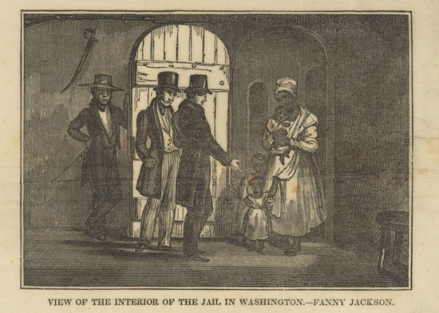
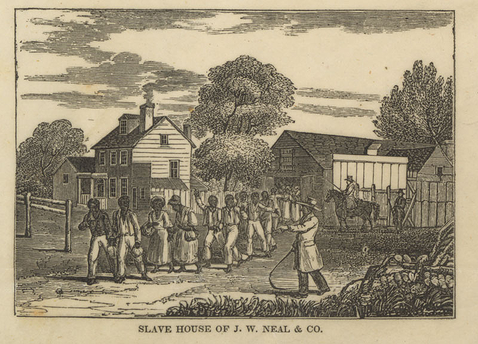
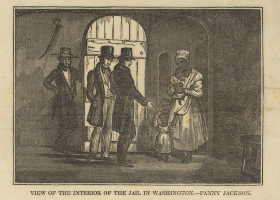
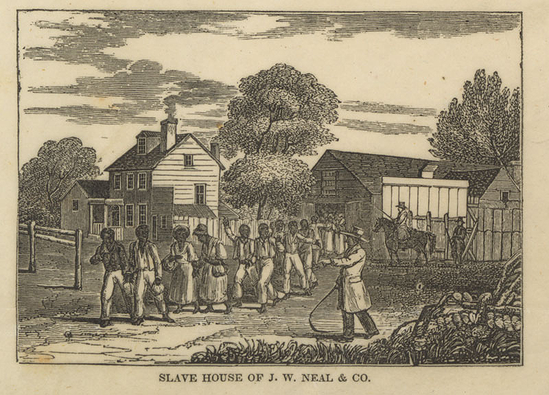

Tamika Y. Richeson
 



Tamika Richeson is a doctoral candidate in History at the University of Virginia. Her work explores black female criminality in Civil War era Washington, D.C. to understand the racial and gendered context in which American criminal law took shape. Her interests include nineteenth century social and cultural history, African American Studies, women and gender studies, digital humanities, criminal law, and public history.
Richeson earned a Bachelor of Arts degree in Black World Studies at Miami University of Ohio, a Master of Arts degree in African American Studies at Columbia University and a Master of Arts degree in History at the University of Virginia. She is currently a graduate fellow in the digital humanities at the University of Virginia Scholar's Lab, and serves on the Prince William County Historic Preservation Foundation executive board, and the President's Commission on Slavery and the University.
Images from The Library of Congress and the National Archives